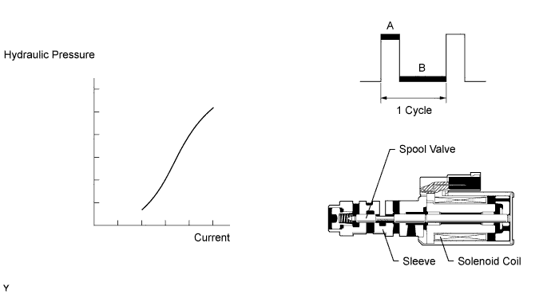
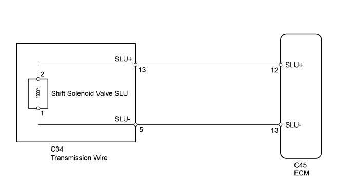
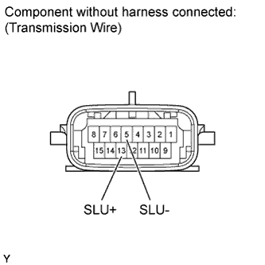
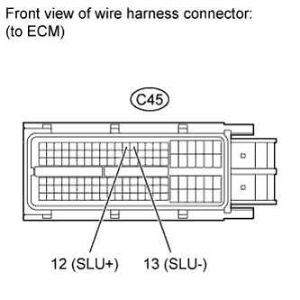
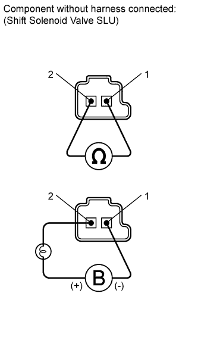

DTC P2759 Torque Converter Clutch Pressure Control Solenoid Control Circuit Electrical (Shift Solenoid Valve SLU) |

| DTC Code | DTC Detection Condition | Trouble Area |
| P2759 | An open or short is detected in the shift solenoid valve SLU circuit for 1 sec. or more while driving (1 trip detection logic). |
|

| 1.INSPECT TRANSMISSION WIRE (SHIFT SOLENOID VALVE SLU) |
 |
Disconnect the C34 transmission wire connector.
Measure the resistance according to the value(s) in the table below.
| Tester Connection | Condition | Specified Condition |
| 13 (SLU+) - 5 (SLU-) | 20°C (68°F) | 5.0 to 5.6 Ω |
| 13 (SLU+) - Body ground | Always | 10 kΩ or higher |
| 5 (SLU-) - Body ground | Always | 10 kΩ or higher |
|
| ||||
| OK | |
| 2.CHECK HARNESS AND CONNECTOR (TRANSMISSION WIRE - ECM) |
 |
Disconnect the C45 ECM connector.
Measure the resistance according to the value(s) in the table below.
| Tester Connection | Condition | Specified Condition |
| C45-12 (SLU+) - C45-13 (SLU-) | 20°C (68°F) | 5.0 to 5.6 Ω |
| C45-12 (SLU+) - Body ground | Always | 10 kΩ or higher |
| C45-13 (SLU-) - Body ground | Always | 10 kΩ or higher |
|
| ||||
| OK | ||
| ||
| 3.INSPECT SHIFT SOLENOID VALVE SLU |
 |
Remove the shift solenoid valve SLU.
Measure the resistance according to the value(s) in the table below.
| Tester Connection | Condition | Specified Condition |
| 1 - 2 | 20°C (68°F) | 5.0 to 5.6 Ω |
Apply 12 V battery voltage to the shift solenoid valve and check that the valve moves and makes an operating noise.
| Measurement Condition | Specified Condition |
| Valve moves and makes an operating noise |
|
| ||||
| OK | ||
| ||